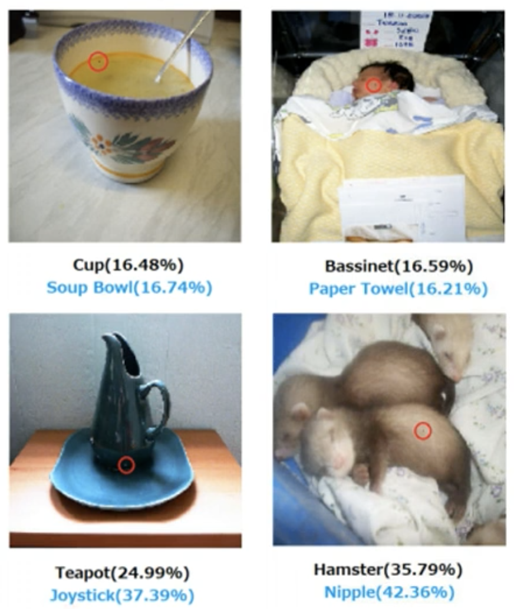

机器学习 by 李宏毅(10-1)
Adversarial Attack
把 Network 用在真正的应用上, 光是正确率高是不够的, 还需要能够应对来自人类的恶意, 如果 Network 的工作是要侦测有恶意的行为, 这些它要侦测的对象, 会去想办法骗过 Network, Network 要在有人试图想要欺骗它的情况下,也得到高的正确率
举例来说 今天都会用 Network 来做 E-Mail 的 Filtering 侦测一封邮件是不是垃圾邮件, 对于一个垃圾邮件的发信者而言, 他也会想尽办法避免他的邮件被分类垃圾邮件。
Example of Attack
对于影像识别的系统, 给它一张照片, 它可以告诉我们说这张照片属于什么类别
在输入照片上面加入一个非常小的噪声, 一般这个噪声都非常非常地小,小到人肉眼看不出来。加噪声的照片叫做 Attacked Image, 没有被加噪声的照片, 一般叫 Benign Image, 是还没有被攻击的图片。Benign Image 丢到 Network 的输出是猫, 希望 Attacked Image 攻击方希望 Attacked Image 到 Network 的输出不可以是猫,要变成其他的东西。
攻击大致上可以分成两种类型：
没有目标的攻击,没有目标的攻击原来的答案是猫, 目标让 Network 的输出不是猫
有目标的攻击, 希望 Network 输出不能是猫, 还要输出别的东西。比如说 我们希望加了一个噪声以后, Network 输出是海星, 才算是攻击成功。
用 50 层的 ResNet 举例来说，当一个 Benign Image 没有被攻击的图片, 输入到 50 层的 ResNet 的时候,它的输出是 Tiger Cat，置信度是 0.64
接下来在 Benign Image 上面加入一些噪声, 希望成功攻击的目标,是把 Tiger Cat 变成海星。而被攻击以后的图片如图，肉眼几乎看不出来。把这张图片丢到 ResNet 以后，ResNet 的 Output 变成 Star Fish, 而且置信度是 100 %
如果加入的只是一般的噪声,它并不一定会犯错
- 图片加入了噪声,这个时候 ResNet 看到的是 Tabby Cat, 但无论如何都知道是猫科动物
- 把噪声加得更大一点, Persian Cat 这是波斯猫
- 把噪声再加更大一点, 人眼可能已经不知道这是什么东西了, 这个时候 ResNet 说,它看到了 Fire Screen, 机器觉得前面的噪声是这个屏风, 而后面这个橙色的猫就是火焰
但不知道为什么加入一个人肉眼看不到的噪声的时候, 却产生了天差地远的结果
How to Attack
Network 是一个 Function 我们叫它 f, Function 输入是一张图片,我们叫它 x0, 它的输出是一个 Distribution,这个是这个分类的结果,那我们叫它 y0。假设 Network 的参数就是固定的
如果是 Non-Targeted Attack，现在目标就是, 找到一张新的图片用 x 来表示,当 x 丢到这个 Network f 的时候,它的输出是 y, 正确的答案叫做 ŷ, 希望 y 跟 ŷ 的差距越大越好。本质解一个 Optimization 的问题, 跟训练 Network 是非常类似的。确定一个 Loss Function L, 是 y 跟 ŷ 之间的差距,取一个负号，举例来说, Classification 的 Cross Entropy，我们希望这个 Cross Entropy 越大越好,所以在 Cross Entropy 前面加一个负号。

Targeted Attack，先设定好目标 \(y^{target}\) 来代表我们的目标, ŷ 是一个 One-Hot Vector, \(y^{target}\) 也是一个 One-Hot Vector,那 y 不止跟 ŷ 越远越好,我们还要跟 \(y^{target}\) 越近越好 。Loss Function 可以写成
\[ L(x)=-e(y, \hat y) + e(y,y^{target}) \]
然后Minimize 这个 Loss。同时加入的噪声越小越好, 也就是新图片跟原来的图片要越相近越好,x 跟 x0 要越近越好，所以解这个Optimization 的 Problem 的时候还会多加入一个限制,这个限制是 \[ d(x,x^0) <= \epsilon \]
Threshold根据人眼感知能力而定，如果 x0 跟 x 之间的差距大于 Σ,我们假设人就会看到这个噪声。d(x0,x) 就代表它们之间的距离，有各式各样不同的算法, 假设 x 是一个向量,x0 是另外一个向量, 这两个向量相减记为 Δx
假设图片x只有四个 Pixel , 把这张图片做两种不同的变化
第一个变化是这四个 Pixel 的顏色, 都做了非常小的改变
第二种变化是只有右下角这个 Pixel 比较大的改变
计算 L2 的 Norm 的时候,这两张图片的 L2-Norm相等，L-Infinity 不一样。如果从这个例子来看 L-Infinity 跟 L2,哪一个比 较接近人类的感知能力？图像右下角的顏色一变深, 就发现有图片有变化做了某种修改, 所以看起来 L-Infinity 也许更符合实 际的需求, 避免被人类发现。
如果我们今天要攻击的对象, 是一个跟语音相关的系统, x 跟 x0 其实都是声音讯号, 不见得是 L2 跟 L-Infinity, 要去研究人类 的听觉系统, 人类对什麼频态的变化特别敏感, 根据听觉系统来制定比较适合的 x 跟 x0 之间距离的衡量方式, 这个部分就是 需要用到 Domain Knowledge。
Attack Approach
Minimize Loss，找一个 x 去 Minimize Loss, 但 x 有限制 \[ x^* =\underset{d(x^0,x) \le \epsilon}{arg \ min L(x)} \] 如果把这个限制拿掉, 这个问题跟 Train 一个模型其实没有差别，只是把参数改成Network 的 Input。
现在 Network 的参数是固定的,我们只去调 Input 部分, 从而 Minimum Loss
- 初始化 Input x，令 x = x0
- Gradient Descent ，Iterative Update 参数, 设 Iteration, t=1 to T。每一个 Iteration，计算 Gradient of x to Loss再 Update Image
- Image x0 - Gradient * Learning Rate
Gradient Descent 的对象做限制，Gradient Descent 中再加一个 Module fix，Update 参数以后, 如果 xt 跟 x0 的差距大于ε，\(x^t=fix(x^t)\)
假设现在用 L-Infinity，x0 如图 x 可以取值范围只有方框的范围，所以如果得到蓝色这个点跑出框, 就在框里找一个跟蓝色的点最近的位置。
Fast Gradient Sign Method （FGSM）
FGSM 只 Update 一次参数，只做一次的 Attack，G 做了一个特别的设计：不直接用 Gradient Descent 的值, 而是取一个 Sign \[ sign(x)=\left\{\begin{matrix}1 && if & x>0 \\0 && if & x=0 \\ -1 && if & x<0\end{matrix}\right. \] Learning Rate = ε，所以 x0 做完一次攻击以后, 它一定会挪到四个角落的地方
\[ x^t = x^t - \epsilon \times g \{-1,1\} \]
White Box vs Black Box
上述的攻击都需要知道 Network 的参数，这种攻击称为 White Box Attack. 但是线上模型的 parameters 几乎不可能获得。所以在不知道 parameters 的 Attack 称为 Black Box Attack
- 假设知道Network 的训练数据。
- 自己训练一个 Proxy Network 来模仿要攻击的 Network，Proxy Network 会在一定程度上近似Target Network，对Proxy Network 的Attack 很有可能对 线上的 Network 有效
- 完全没有训练数据，那就用 Network 生成一些 成对数据
Black Box Attack 结果如下：
对角线是白箱攻击，模型正确率为0. 黑箱攻击模型的正确率越低代表攻击越有效。
Ensemble Attack，行表示其余Network是白箱攻击，行中的Network 黑箱攻击。
Attack Is so easy？
下图所示，横轴表示 Attack 有效的方向，纵轴表示随机方向。深蓝色表示识别正确，攻击有效的方向在图中所有的Network都近似，所以一些人认为攻击成功的原因有一部分在于训练数据的局限性
One pixel attack
改变输入图像的一个 pixel，Network就会识别错误

Universal Adversarial Attack
一个 signal 成功攻击所有图片，而不是每个图片特殊的signal。只要 universal signal 加到图片，Network就会被成功攻击
Beyong Images
- Detect synthesized speech：加上Noise，Network 检测不出明显合成的 speech
- NLP---Q&A
Attack in the Physical World
上述的Attack都是在 Input 上加上特殊的Noise或者signal，从而攻击成功。实际上，攻击也可以加在现实中
人脸识别戴上特殊的眼镜
- 实验考虑了现实世界的多角度
- 考虑的摄像捕捉的像素局限性
- 考虑到某些颜色从数字信号到现实世界发生变化的可能性
交通标志识别系统攻击
- 在路牌上贴纸，攻击辨识 Network
- 延长数字的笔画
"Backdoor" in Model
在训练 Network 前，在训练资料中加入Attack的图片，图片和标注看起来都正常，但是训练出来的模型会误判attack的图片
Defence
Passive && Proactive
Passive Defence
模型不变，但是在Network之前加上一个Filter，削减 attack signal 的作用。

比如对图像模糊，结果正确。但是模糊化会使得置信度下降
对图像进行压缩和解压缩，有损
利用Generator产生和输入一模一样的图片，Generator 不会产生attack signal
但是，Filter 一但被知道，就会失去作用，完全可以把Filter看做是 Network的第一层。所以需要随机化Filter的操作
仍然可以被 universal signal 攻击
Proactive Defence
训练一个 Robust 的模型，在模型训练的过程中，就对模型攻击。将攻击后的图片标记正确的label，重新训练模型。
Adversarial Training（数据增强一种方法）:
- Training model
- Find problem and Attack
- Add attacked data to training data
- retrain model （loop）